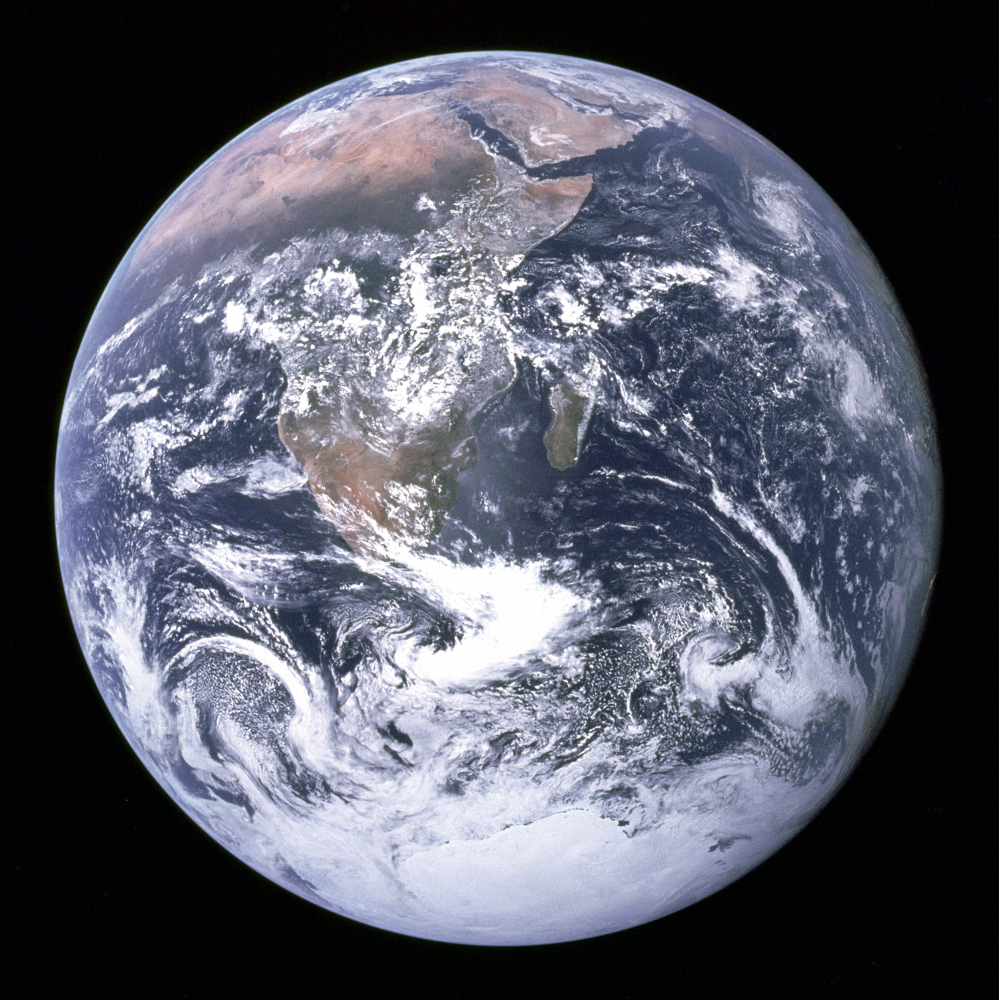
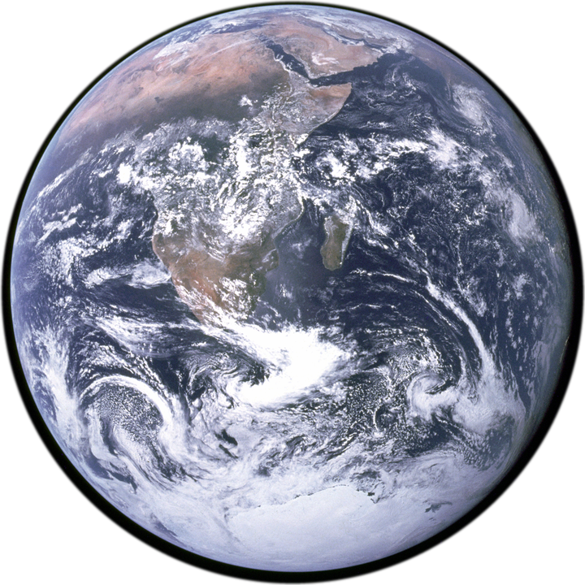
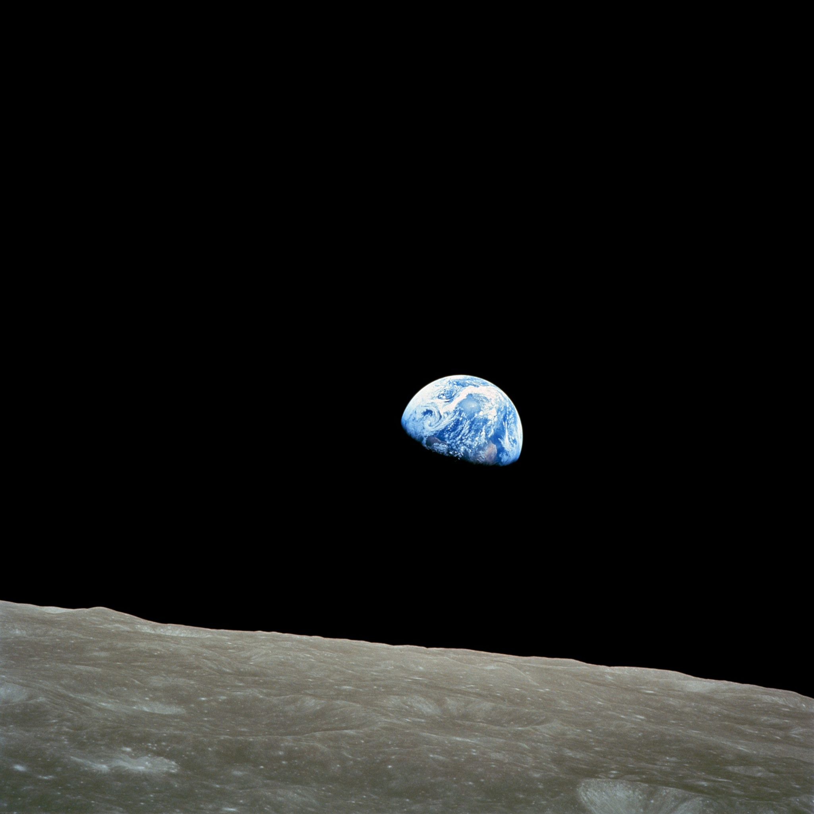
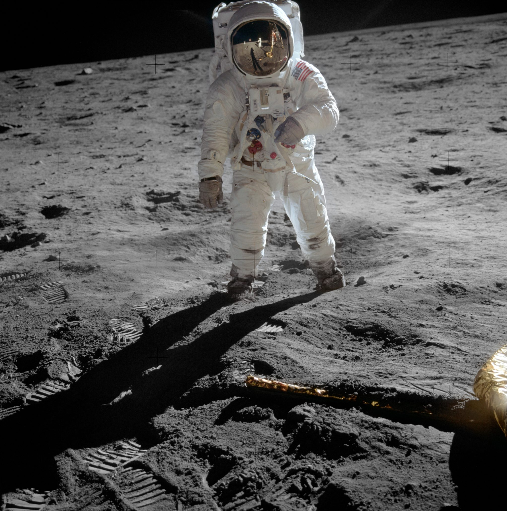
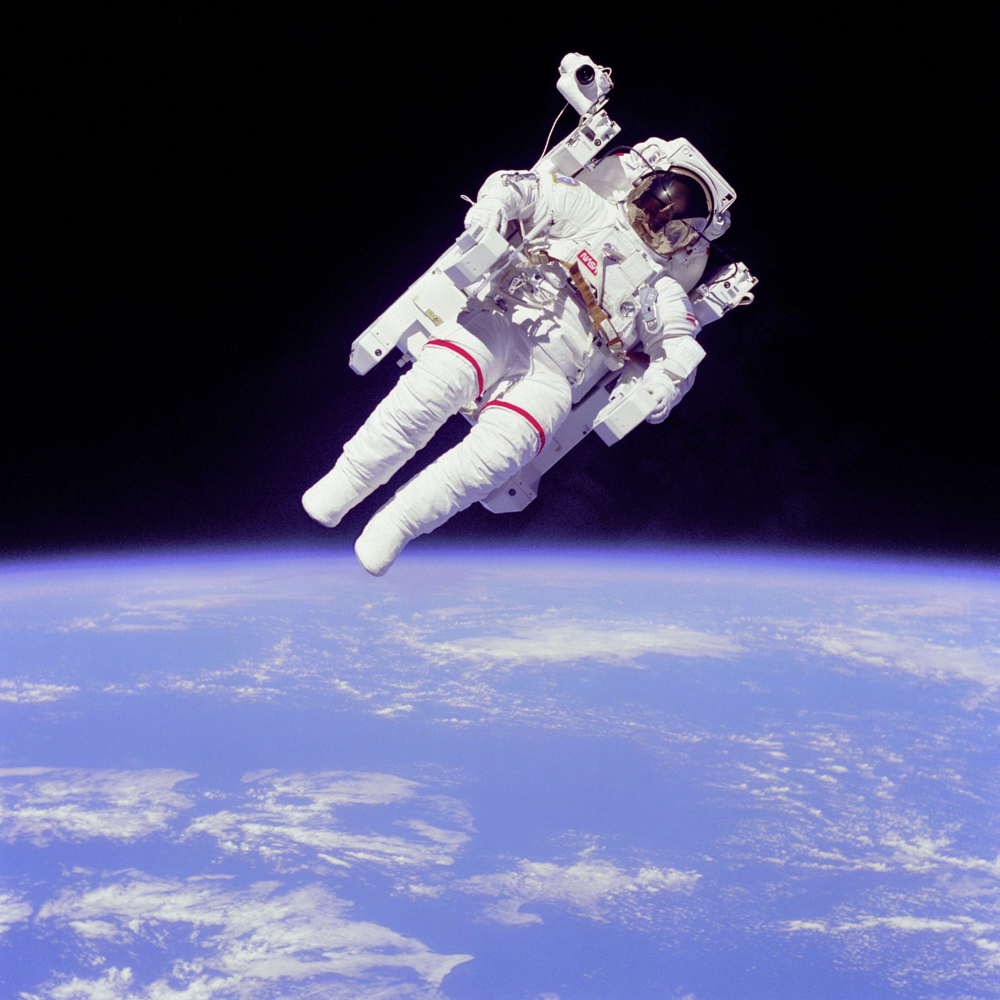
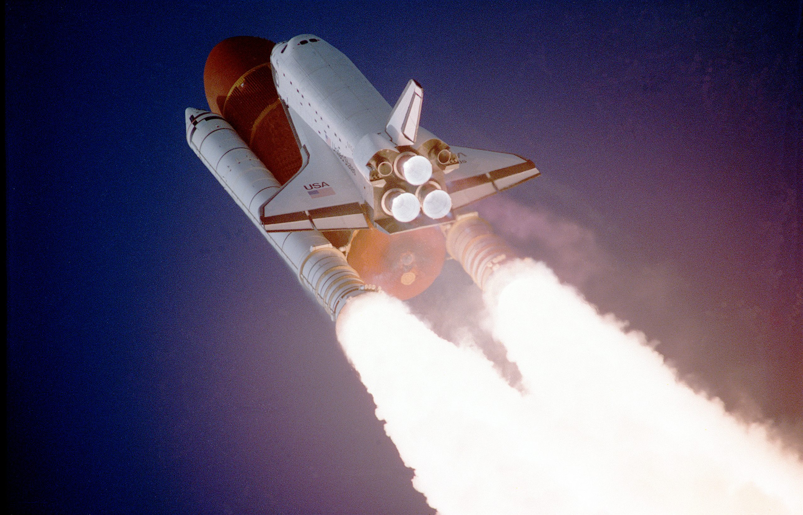
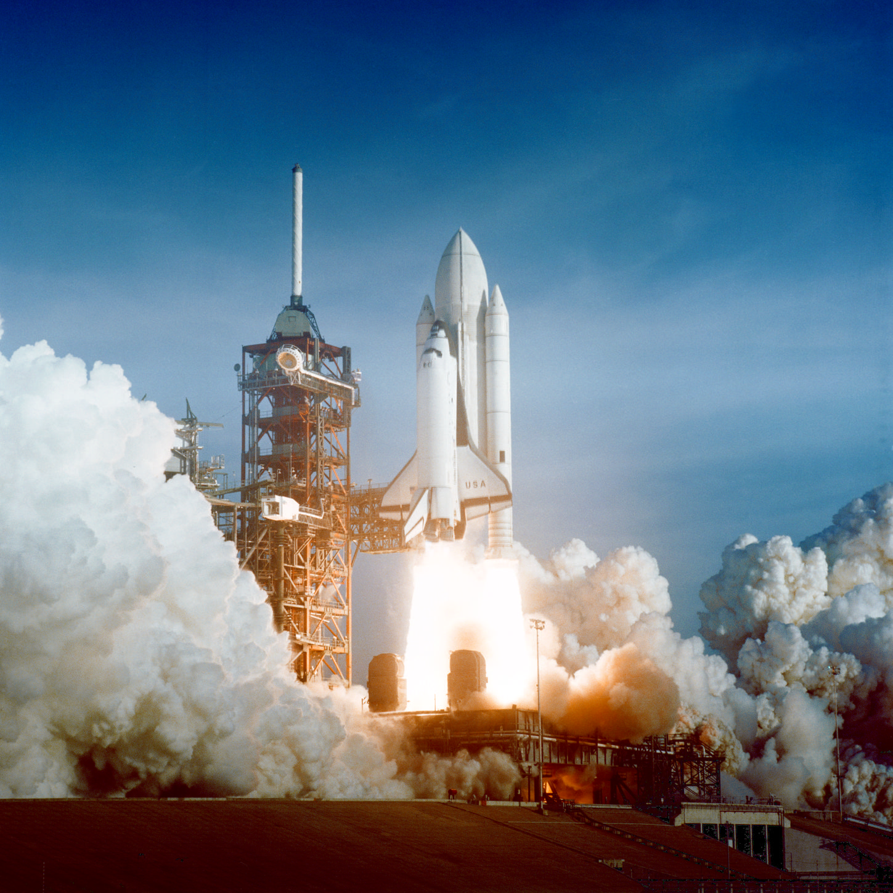
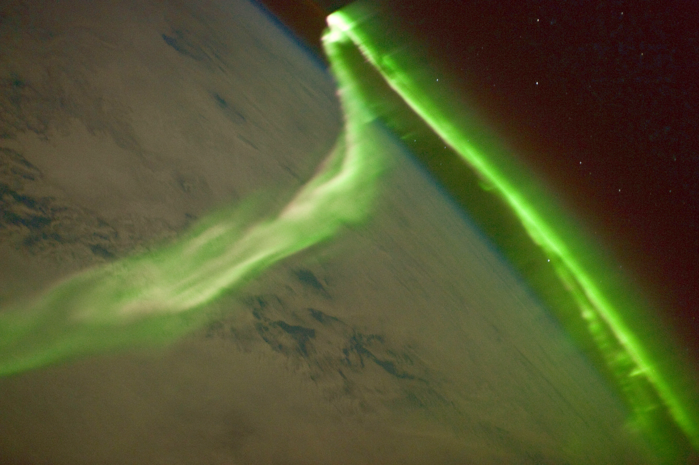
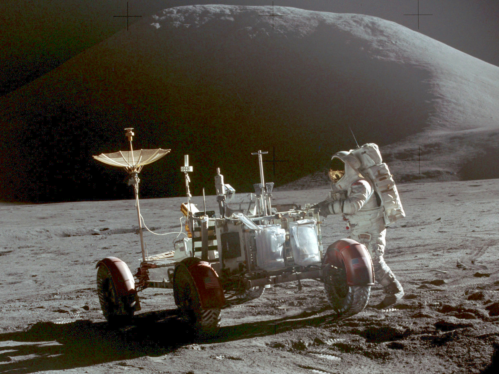
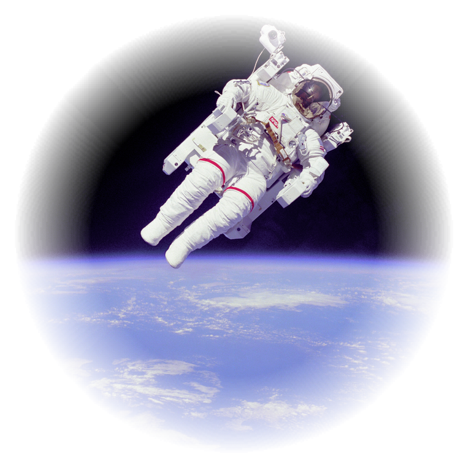

Spring 2027 catalogue
Photographs from fifty years of spaceflight, printed on archival cotton paper and framed by hand.
We started Orbital Prints in a converted bakery with one large-format printer and a box of library books about the space programme. Ten years later we still print every order ourselves, one sheet at a time, and we still check each print under a daylight lamp before it is wrapped.
This spring we have added three photographs that customers asked for again and again, a new walnut frame, and a range of small prints for desks, shelves and narrow hallways. Every image in the catalogue was taken by astronauts or NASA staff and belongs to everyone: what you pay for is the paper, the ink, the frame and our time.
Prices include printing, a cotton-rag mount and delivery within the EU. Frames are optional and listed on the last page.
Ines and Tomas, founders


On Christmas Eve 1968 the Apollo 8 crew turned their spacecraft and saw the Earth come up over the lunar horizon. Bill Anders grabbed the camera loaded with colour film. We print it from a high-resolution scan of the original frame, with deep blacks and none of the grain smoothed away.
| Size | Paper | Price |
|---|---|---|
| 30 × 30 cm | Cotton rag 310 g | €48 |
| 50 × 50 cm | Cotton rag 310 g | €86 |
| 70 × 70 cm | Baryta 325 g | €138 |


New this springIn February 1984 Bruce McCandless flew a hundred metres away from the Space Shuttle Challenger with nothing holding him but a nitrogen-powered backpack. He was the first person to fly freely in orbit, and this is the photograph everyone remembers: one small white figure against the blue of the Earth and the black of space.
The original frame is square. We print it on a smooth, bright paper that keeps the blacks neutral and the snow-white suit crisp, and we leave a generous margin so it can be framed without a mount.
| Size | Paper | Price |
|---|---|---|
| 30 × 30 cm | Smooth rag 300 g | €46 |
| 50 × 50 cm | Smooth rag 300 g | €82 |
| 70 × 70 cm | Smooth rag 300 g | €129 |

Seconds after lift-off in December 1988, a long-range tracking camera caught Atlantis climbing on the flames of its two boosters, close enough to read the flag on its wing. A landscape print for long walls.
| Size | Paper | Price |
|---|---|---|
| 45 × 30 cm | Cotton rag 310 g | €52 |
| 90 × 60 cm | Cotton rag 310 g | €118 |
| 120 × 80 cm | Baryta 325 g | €196 |

Press edition
From four hundred kilometres up, the aurora australis is a green curtain below the station rather than above it. The crew of Expedition 23 photographed it in 2010, with the station's own solar panels just out of frame.
| Size | Paper | Price |
|---|---|---|
| 60 × 40 cm | Silk 250 g | €58 |
| 90 × 60 cm | Silk 250 g | €94 |

Apollo 15 was the first mission to take a car to the Moon. Dave Scott photographed Jim Irwin working beside the Lunar Roving Vehicle, with Mount Hadley behind them, its slopes lit by a sun low over the horizon.
The original frame is small, so we offer it only up to 50 cm wide, where it still holds every footprint in the dust. Like First Light, it is separated for the press and printed on silk paper.
| Size | Paper | Price |
|---|---|---|
| 30 × 22 cm | Silk 250 g | €29 |
| 50 × 37 cm | Silk 250 g | €49 |
Every photograph in the catalogue is also available as a 15 × 15 cm or 15 × 20 cm print on the same papers, unframed, in a card sleeve. Order any five and the sixth is free.

Each frame is cut from solid wood in our workshop and glazed with UV-filtering acrylic, which is lighter than glass and safe to post. Choose a finish:
Frames cost 40% of the print price and add five working days to delivery. Unframed prints leave the workshop within three days, rolled in a tube.
Order online, by phone, or with the card inside this catalogue. We answer every message ourselves.